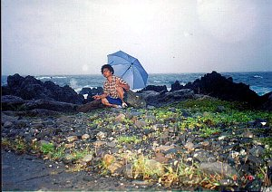
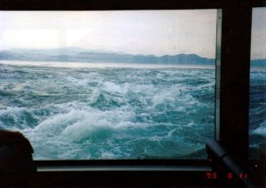
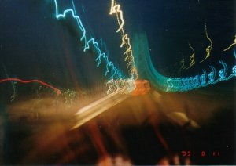

四国旅 | |
|---|---|
| 写真１：足摺岬：写真は灯台です。この周辺は国立公園で非常に海がきれいであります。 ジョン万次郎がどうのこうの‥の看板がありましたな。 写真２：ルスト台地：写真は放牧されている牛です。当日は霧がすごかった。 | |
 写真１ |  写真２ |
写真３：桂浜：坂本龍馬が荒れる海を見ながら考えた浜‥がここだそうです。 写真４：室戸岬：室戸山最御崎寺（第24番）。四国霊場八十八ヶ所の１つ。弘法大使の像が後ろにある。台風が来ていたため大雨でした。 | |
 写真３ |  写真４ |
| 写真５：室戸岬の海岸で写真撮り。海が荒れてました。命がけ？ 写真６：南阿波海岸：南国ですよ、ここは。場所はがけから降りたところとしか覚えていない。 | |
|  写真５ |  写真６ |
| 写真７：鳴門渦：遊覧船にのって渦の近くまで行きました。満潮時で渦がすごかった。 写真８：明石大橋：大橋のライトアップはきれいでした。運転中に撮影したためこんなんなりました。 | |
|  写真７ |  写真８ |
| 写真＆コメント ｂｙ シュガー | |